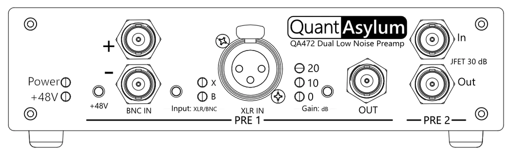

QA472 Dual Low-Noise Preamp

The QA472 is a two-channel low-noise microphone preamp. As a reference amplifier, it can be used for accurate and repeatable measurements of sound pressure level when combined with a calibrated microphone. It is compact, easily powered, and can be used on a bench or in a portable testing setup.
Preamp 1 provides three selectable gain levels (0, 10, and 20 dB) to accommodate a variety of microphones, input levels, and the option for +48V phantom power.
Preamp 2 provides a fixed gain of 30 dB, a higher input impedance, and lower noise compared with Preamp 1.
Balanced or single-ended connections are made to the preamp using BNCs or the front panel XLR socket (Channel 1 only). Outputs are taken from BNC connectors, one for each channel.
Power is supplied by a USB-B socket on the back panel and draws approximately 100 mA at 5 volts. This is internally isolated for low-noise operation.
The QA472 is not designed as a microphone recording solution and does not appear as a USB device when connected to a computer — USB just provides power.
-
Get started in 5 minutes
First steps with the QA472.
-
Join the Forum
Get community support.
-
Read the docs
Quick summary of all device features.
-
Read the data sheet
Review device performance in more detail.